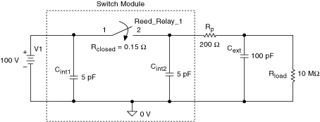
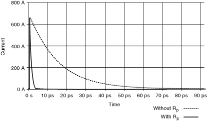

当开关闭合时，瞬态电流流过为电容充电。该电流可能大大高于通过系统的稳态电流并导致接触焊接。即使电压和稳态电流在开关规格范围内，也可能由于这种高浪涌电流而造成损坏。
为了限制浪涌电流，应在 C int2和 C external之间串联一个阻抗，例如电阻器。该电阻器隔离了负载电容的不良影响并限制了对继电器触点的损坏。应选择保护电阻 R p ，使得
V/R p < 继电器的开关电流额定值
下图说明了保护电阻 R p 的使用。
|  |
|  |
这两个电路中与浪涌电流相关的能量可以表示为
E无保护= ½(C int2 +C ext ) V 2 =525 nJ
和
带保护的E = ½(C int2 ) V 2 =25 nJ
|
注意 尽管峰值电流相同，但受保护电路的相关能量要少 21 倍。 |
 提交有关此主题的反馈。
提交有关此主题的反馈。 访问ni.com/support以获得技术支持。
访问ni.com/support以获得技术支持。